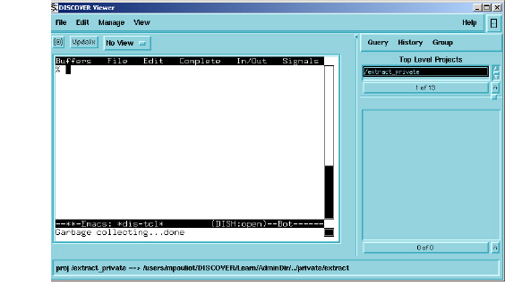

Open DISH
The first Access menu option, Open DISH, is the only standalone command that does not include submenus. Open DISH launches an Access shell, or viewer, you can run Access commands in. The DISH client looks like a regular DIScover Viewer window, complete with a Minibrowser on the right side. As you work within DISH, the Minibrowser provides the capability to continue working with Browser elements and files:

Notice that the DISH window itself has an internal Emacs menu that helps you to control your Access session. A single click of the menu name displays the menu options for the selected menu.
• Buffers allows you to manipulate the view of buffers and frames in the active DISH session. Double click this menu to display the available buffers and frames.
• File allows you to work with files and directories; save, kill, and print buffers; create bookmarks; and perform functions such as emerge, compare, and apply patches.
• Edit allows you to manipulate and search for text within your session.
• Complete
• In/Out allows you to navigate and control input and output.
• Signals allows you to communicate with your session during processing, and offers such commands as break, continue, kill, quit, and so on.
The remaining Access menu options and their features are discussed next.